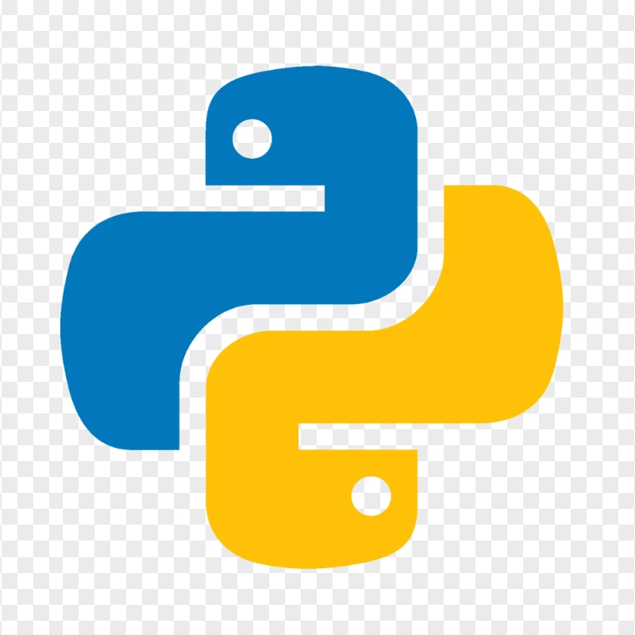

01 — Skills
What I Work With
Proficient in Python, Java, C++, JavaScript, and HTML/CSS, with experience in React, Node.js, Express, Flask, Git, Docker, AWS, and Linux.

PythonStanford University · CS & Math
I am a Stanford student interested in computer engineering and math. I build clear, useful software and simple websites. My work blends technical skill with community care, shaped by tutoring, church service, and research.
Proficient in Python, Java, C++, JavaScript, and HTML/CSS, with experience in React, Node.js, Express, Flask, Git, Docker, AWS, and Linux.

PythonBuilt full-stack web applications and internal tools supporting Resilience's social-emotional learning apps and games for parents, educators, and communities. Worked across the frontend and backend, shipping features, fixing bugs, and helping deploy and maintain reliable software.
Worked with faculty on child social interaction research, managing datasets and supporting experimental design using R.
Supported employer recruiting events and managed logistics through Handshake.
Facilitated weekly discussions and transition activities for first-year and transfer students, supporting academic adjustment and community building.
Beyond the screen — giving back through service, culture, and faith.
Created educational content on political and social issues, developing clear narratives and engaging a young audience through short-form video.
Planned and executed cultural events for 50+ Stanford students, managing logistics and communication for the Ethiopian & Eritrean Student Association.
Supported weekly services, mentored youth, and assisted with community events and outreach at the Eritrean Orthodox Church in New York City.
I've known Abel and his family for nearly nine years, since they first came to the United States. Watching Abel grow has been incredibly meaningful. He is thoughtful, disciplined, and deeply committed to learning. I worked closely with him while editing his college essays, including the one that helped him gain admission to Stanford, so I've seen firsthand how intentional and reflective he is about his goals. Abel doesn't just work hard — he listens, improves, and leads with integrity. I have no doubt he will continue to make a strong and positive impact wherever he goes.